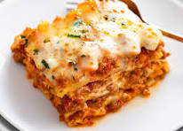

Lasanga

Description
Lasagna is an Italian dish of pasta sheets layered with
fillings and baked. The word can refer to the pasta sheet itself or the baked dish.
Ingredients
- Eggs
- Onions
- Garlic
- Sugar
- Olive oil
- Seasonings
Steps
- Step 1: Gather the ingredients
- Step 2: Cook onion until translucent
- Step 3: Stir in crushed tomatoes, tomato sauce, 1 tablespoon fresh parsley, garlic, basil, salt, oregano, and sugar. Reduce heat to medium-low and simmer, stirring occasionally, for 30 minutes
- Step 4: Mix cottage cheese, Parmesan cheese, eggs, remaining 1 tablespoon fresh parsley, salt, and pepper in a large bowl until combined
- Step 5: Assemble lasagna
Home